启动失败
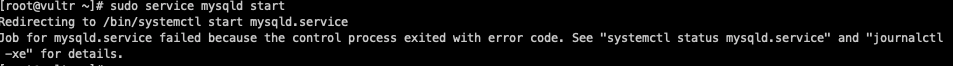
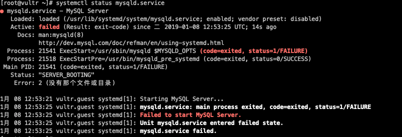
查看日志
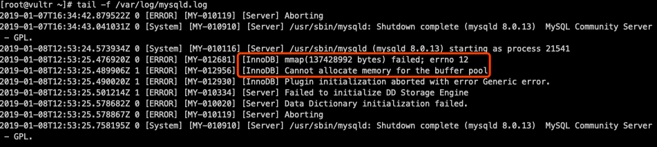
原因：内存不足
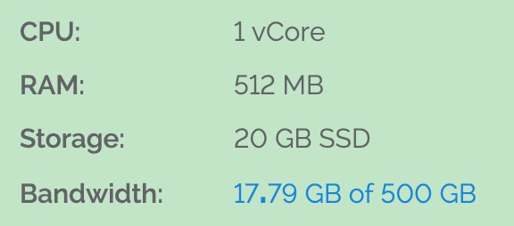
Solution
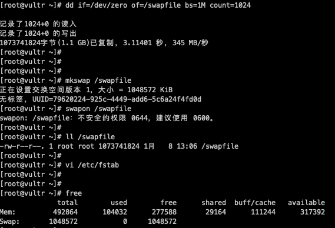
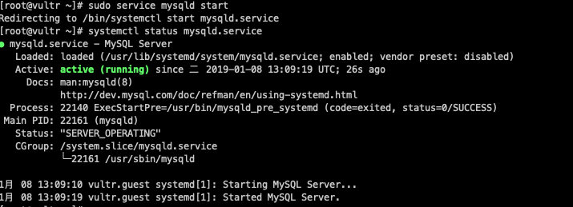
成功开启MySQL
获取临时密码
1 | grep "A temporary password" /var/log/mysqld.log |
使用DBeaver客户端连接失败
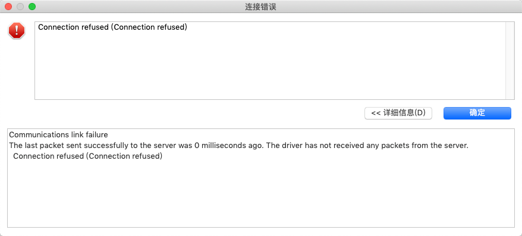
1 | Communications link failure |
Solution
远程测试端口是否开启
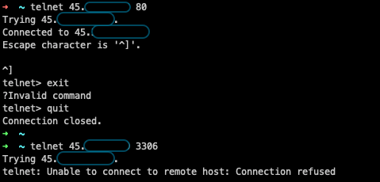
服务器本机查看端口是否开启
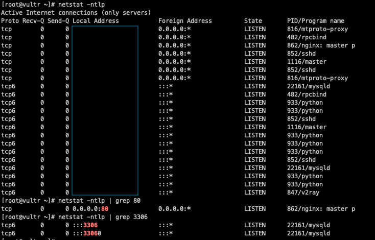
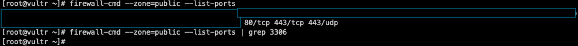
原因：防火墙中端口没有开启
1 | [root@vultr ~]# firewall-cmd --zone=public --list-ports |
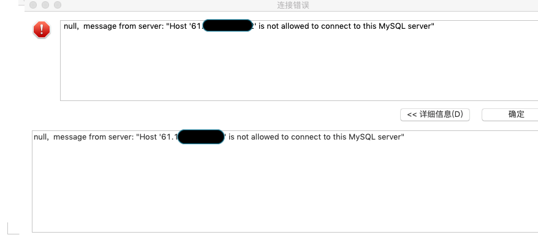
1 | null, message from server: "Host '61.148.199.222' is not allowed to connect to this MySQL server" |
服务器本地可以登录
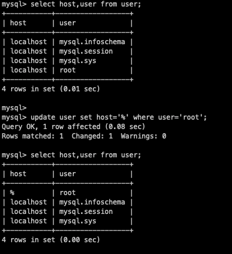
客户端无法登录，Public Key Retrieval is not allowed
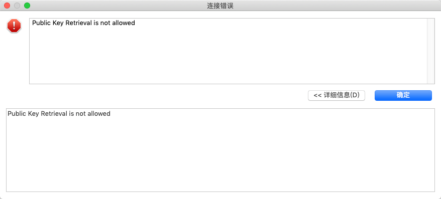
修改DBeaver中驱动属性，allowPublicKeyRetrieval属性值改为true
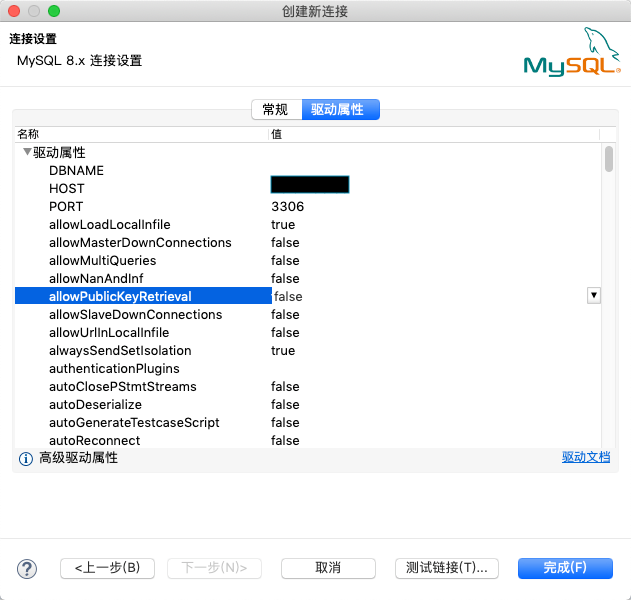
连接成功
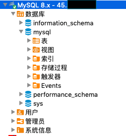